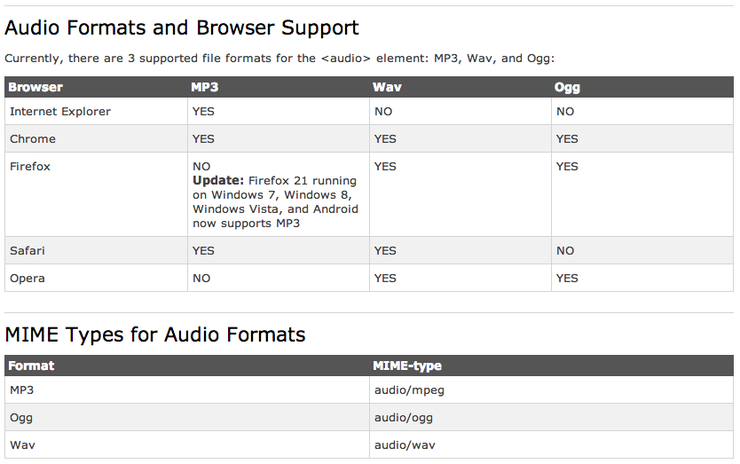

HTML5 Audio <audio>태그
목록
0. 브라우즈 지원
Browser Support
Internet Explorer 9+, Firefox, Opera, Chrome, and Safari support the <audio> element.
Note: Internet Explorer 8 and earlier versions, do not support the <audio> element.
1. <audio>태그는 웹브라우즈에서 음악을 재생해준다.
<!DOCTYPE html>
<html>
<body>
<audio controls>
<!--<source src="./horse.ogg" type="audio/ogg">-->
<source src="./bm.mp3" type="audio/mpeg">
</audio>
</body>
</html>
2. <audio> 태그의 속성
src : 음악파일의 경로 설정
preload : 재생전에 모두 불러올지 설정
autoplay : 음악의 자동 재생여부 설정
loop : 반복 재생 설정
controls : 음악재생 인터페이스를 보이기 할지를 설정
3. 현재 브라우즈마다 지원하는 형식이 다르다
